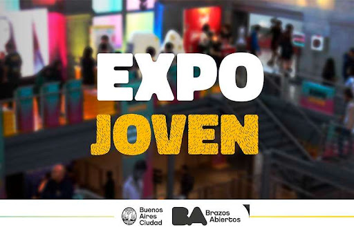

Bienvenidos a la Expo Joven Full Stack 2026

¿Qué es la Expo Joven Full Stack?
La Expo Joven Full Stack es un evento anual donde jóvenes desarrolladores presentan sus proyectos y habilidades en el mundo del desarrollo web. Es una oportunidad para aprender, compartir conocimientos y conectarse con otros entusiastas de la tecnología.